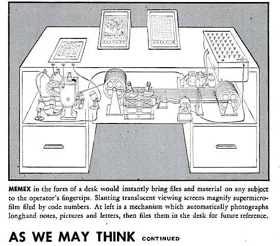
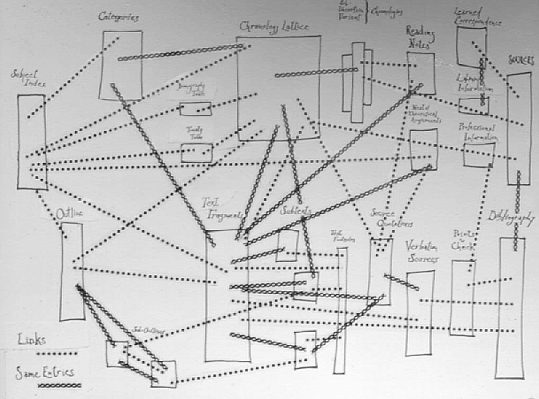
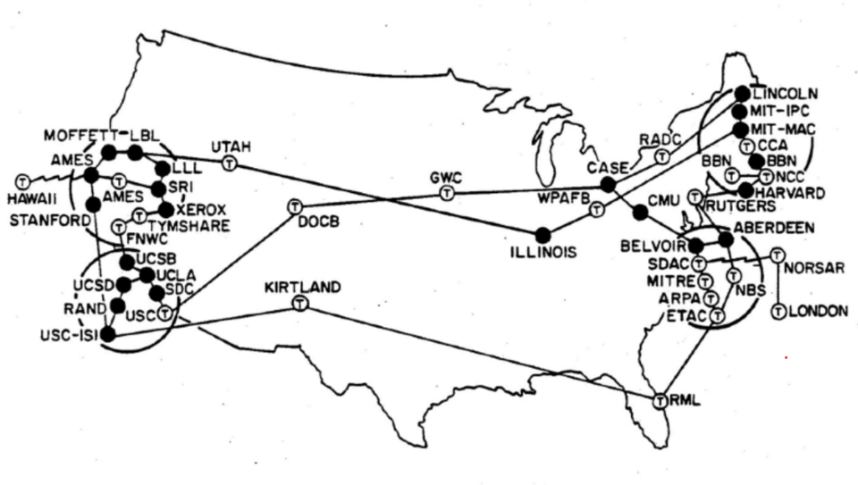
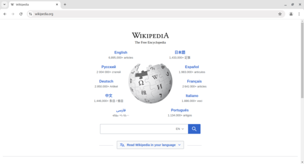
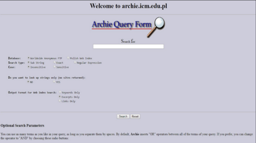

WEB HISTORY
Milestones

1910
Belgian information activist Paul Otlet and Henri La Fontaine founded The Mundaneum.

1945
Vannevar Bush's article "As We May Think” described his Memex (or memory expansion) device.

1960
Ted Nelson created the concept of the Xanadu system and made the term hypertext.

1964
Building on ideas of J. C. R. Licklider, Bob Taylor initiated the ARPANET project in 1966 to enable resource sharing between remote computers.

1971
Ray Tomlinson created the very first email program on ARPANET and first used the "@" symbol in email addresses.

1989
Tim Berners-Lee invented the World Wide Web and changed the way we interact with information.
